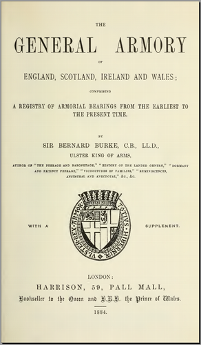

The General Armory of England, Scotland, Ireland and Wales, Comprising a Registry of Armorial Bearings from the Earliest to the Present Time, Sir Bernard BURKE, Harrison, London, 1884
Good background information, *very* comprehensive list of family names (50,000+) and some interesting contemporary advertisements too! Generally good reproduction, some pages very slightly faded or skewed, fully text searchable but OCR accuracy only about 90% so some care needed.
Contents as follows, numbers are PDF Page numbers:
One volume only ( generalarmoryofe00burk ) Preface 11 Contents 13 History of Heraldry 15 Glossary 38 Dictionary 47 Royal Armory 61 Tribes of Wales 77 Orders of Knighthood 81 Supplement to General Armory 95 - 144 The General Armory 145 - 1297 Mottoes 1298 - 1321 General Advertisements (including some heraldic stationers and artists) 1323 - 1364